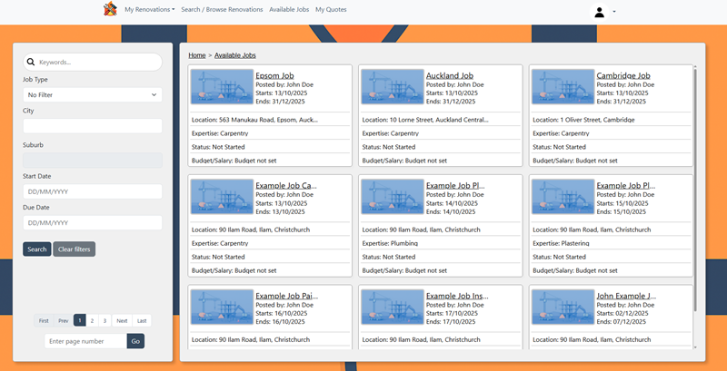
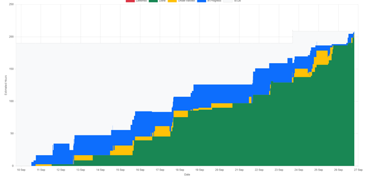

Tradie Me was a yearlong team project developed as part of the SENG302 Software Engineering course. The goal was to design a web app that helps users manage property renovations by tracking renovation tasks, timelines, and progress based on a detailed set of requirements provided by a simulated “project owner.” As part of a multi-person development team, I've contributed to both backend and frontend development, using Java and Spring Boot for the backend and Thymeleaf for templating.


I've worked on database integration to support user data persistence and designed features for task and renovation management. We also learned a lot of skills in automated testing and quality assurance (Unit, integration, Cucumber, Playwright, etc..).The most valuable part of this project has been learning how to work effectively in a team of software developers within a simulated workplace environment. We follow the SCRUM framework with regular sprint planning, daily stand-ups, and retrospectives. Through this, I've gained practical experience in collaborative development, requirement analysis, time management, and communication.